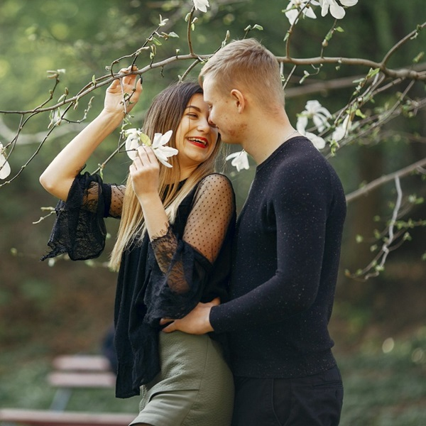
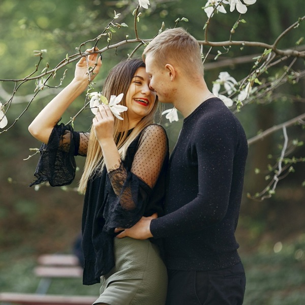

WE CAPTURE THE MOMENTS
At Capturer, we specialize in freezing those fleeting moments in time that hold immense significance for you. With our passion for photography and keen eye for detail, we transform ordinary moments into extraordinary memories.
Whether it's a milestone event, a candid portrait, or the breathtaking beauty of nature, we strive to encapsulate the essence of every moment, ensuring that your cherished memories last a lifetime. Trust us to capture the magic of your life's journey, one frame at a time.


 
